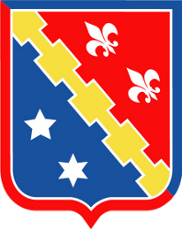
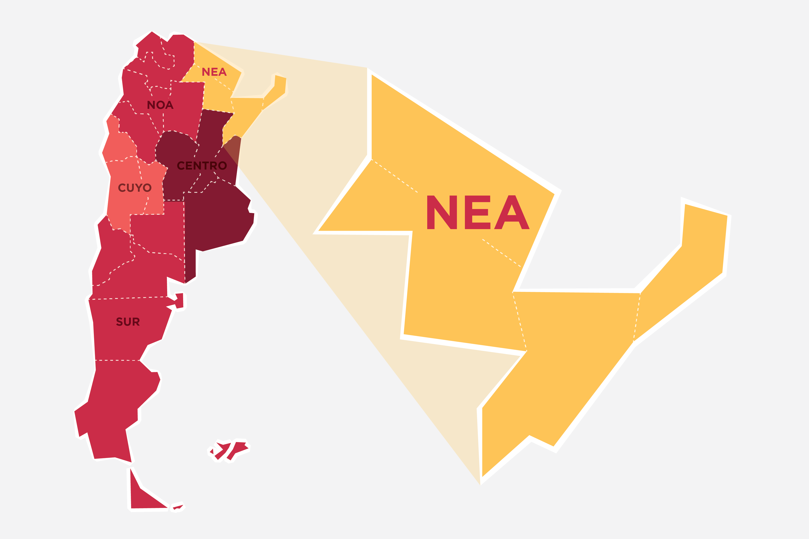
La matriz del NEA es dominantemente hidroelectrica: aprovecha el Parana y el Uruguay, los dos rios mas caudalosos del pais, e inyecta energia al SADI.
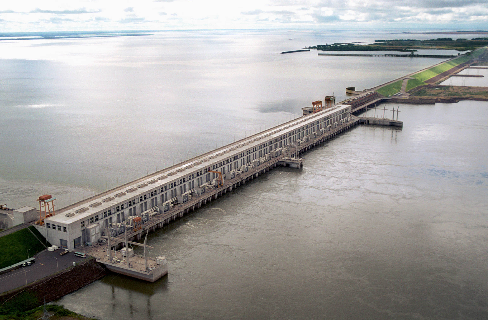
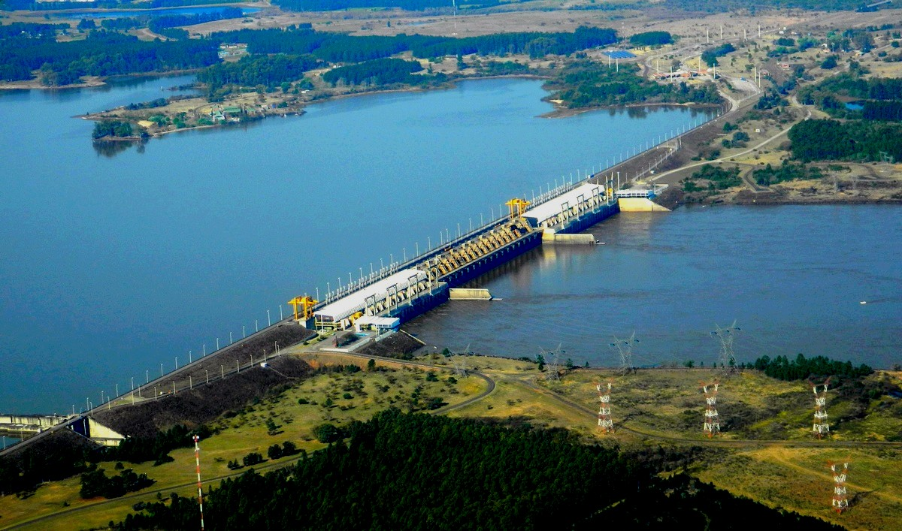
| YACYRETA | SALTO GRANDE | |
| Rio | Parana | Uruguay |
| Paises | Argentina – Paraguay | Argentina – Uruguay |
| Potencia instalada | 3.100 MW | 1.890 MW |
| Turbinas | 20 Kaplan | 14 Kaplan (7 + 7) |
| Generacion media anual | ~20.000 GWh | ~6.700 GWh |
| Inauguracion | 1994 (obra desde 1983) | 1983 (obra desde 1974) |
| Dato clave | Ampliacion Ana Cua: +270 MW (2028) | Regula la frecuencia del SADI |
Juntas suman casi 5.000 MW de potencia limpia: son la columna vertebral de la energia del NEA y aportan al sistema nacional (SADI).
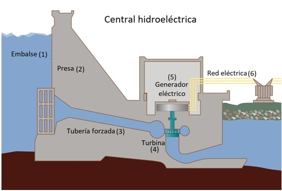
Asi funcionan Yacyreta y Salto Grande: energia limpia y de gran escala, sin emitir CO₂.
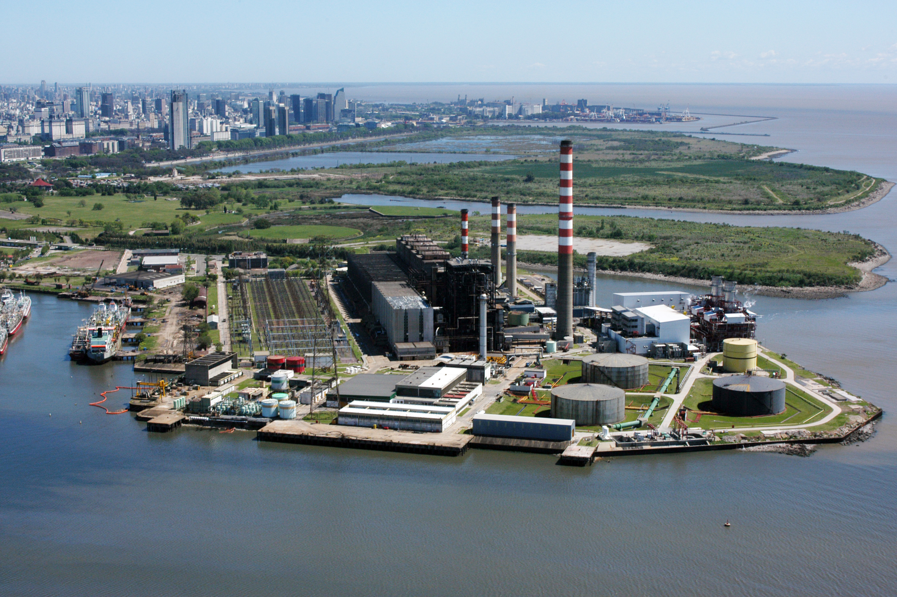
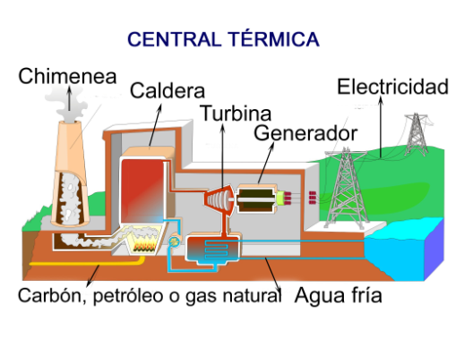
Es el respaldo del NEA ante las bajantes del rio, pero emite CO₂.
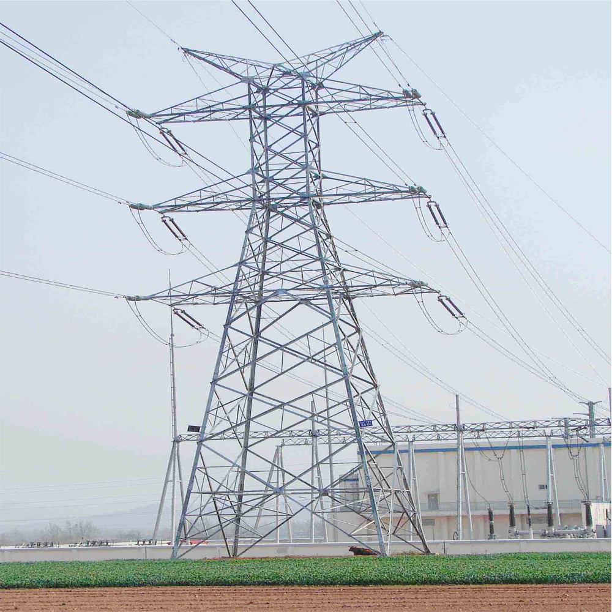
El NEA tiene los rios mas caudalosos del pais: la hidroelectricidad es la opcion natural y de mayor escala. Pero exige valles fluviales aptos y acuerdos binacionales (Paraguay, Uruguay), y convive con la variabilidad estacional del rio. La termica y las renovables completan el cuadro.
Caudal de ~12.000 m³/s, alta eficiencia y vida util >50 anos. Sin CO₂ en operacion, pero sensible a la variabilidad estacional del rio.
Respaldo imprescindible: cuando baja el Parana, las termicas a gas (mas barato) o gasoil (para emergencias) cubren el deficit y garantizan el abastecimiento.
+1.800 horas de sol/ano y biomasa forestal en Misiones. Hoy menores, son el camino hacia la diversificacion en zonas aisladas.
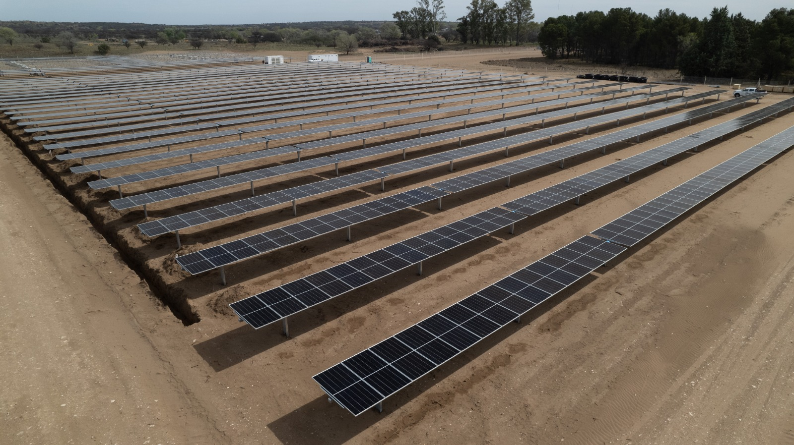
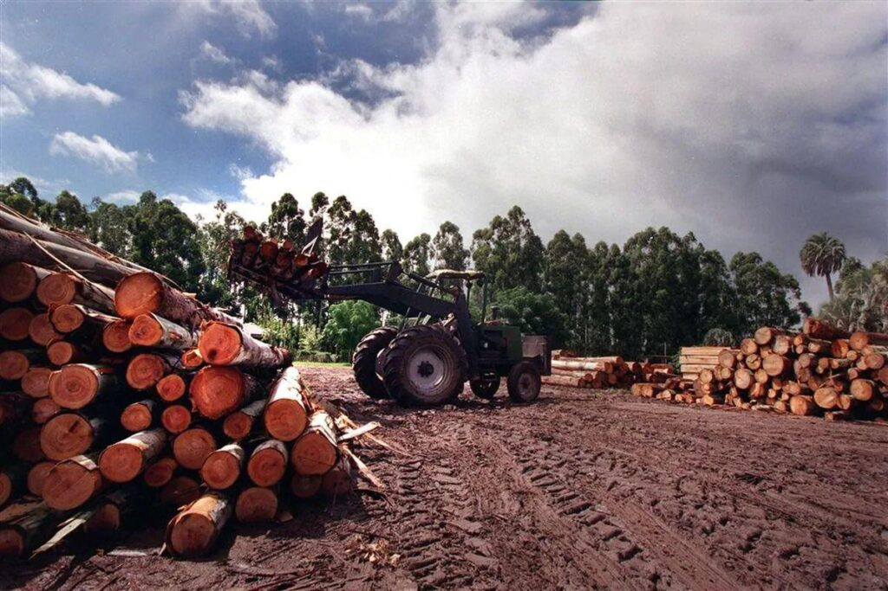
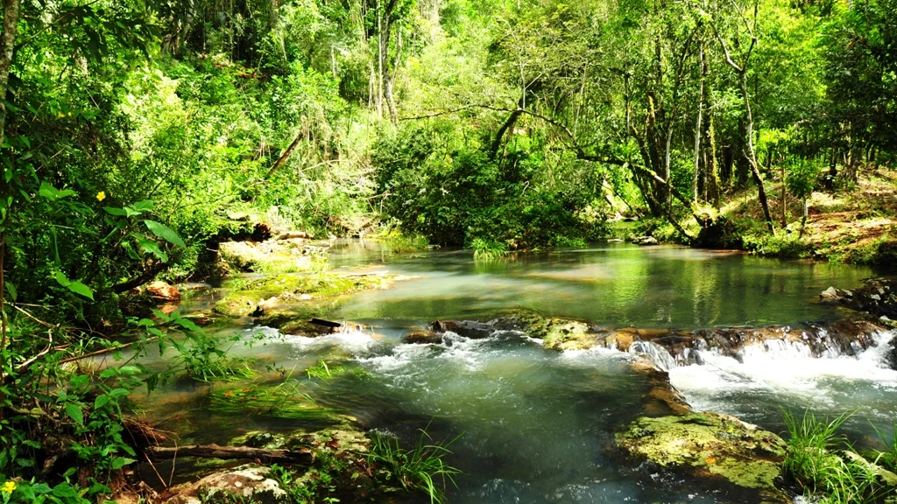
Selva Misionera, Impenetrable chaqueno y Esteros del Ibera: las decisiones energeticas los afectan directamente.
El ENRE regula; CAMMESA administra el MEM y decide el despacho; el SADI interconecta; los transportistas llevan la energia a las distribuidoras y, al final, al usuario.
| Consumo · 31 dias | 480 kWh |
| Categoria | T1-G Residencial |
| Energia (CAMMESA) | |
| Cargo por energia | $ 38.400 |
| Subsidio Zona Muy Calida (50%) | – $ 19.200 |
| Distribucion (VAD) | |
| Cargo fijo + variable | $ 12.800 |
| Impuestos (IVA · IIBB · municipal) | |
| ≈ 30% de la factura | $ 9.670 |
| Total a pagar | $ 41.670 |
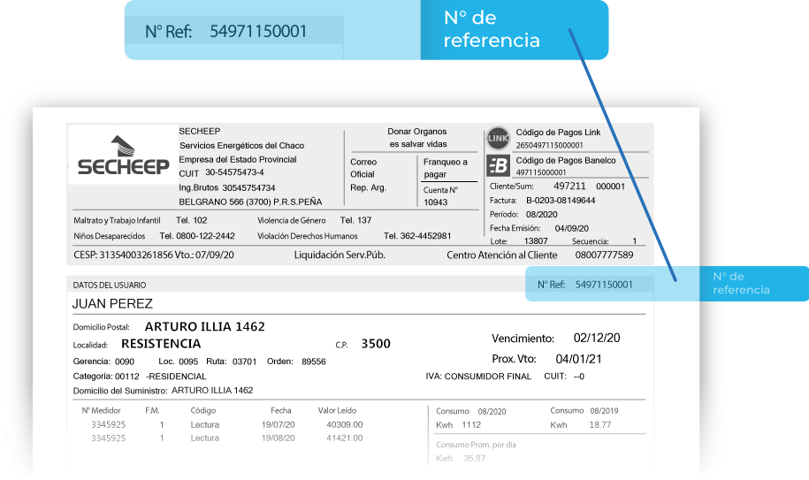
Es lo que SECHEEP le compra a CAMMESA en el MEM. El componente mas variable: sube con el precio de los combustibles (invierno o bajante) y baja cuando Yacyreta genera a pleno.
Chaco es categoria "Zona Muy Calida": en dic–ene–feb el Estado cubre el 50% del consumo base hasta 550 kWh. En 2026 las distribuidoras pidieron extenderlo a marzo.
El costo de mantener y operar la red local: infraestructura, personal y perdidas. Lo fija el ENRE y tiene una parte fija y otra variable segun el consumo.
Cerca del 30% de la factura: IVA nacional del 21%, ingresos brutos provinciales (IIBB) y tasas municipales.
Lineas de los anos 70–80 operando al limite. Falta inversion sostenida en transporte.
Ola de calor feb. 2025: Chaco, Formosa y Corrientes perdieron +50% del suministro.
Depende de la 500 kV Romang–Resistencia. Una falla tira 600 MW de golpe.
En la bajante 2019–2022 (el 5° y 13° anos mas secos desde 1961) Yacyreta cayo al 50%, obligando a usar termicas caras y contaminantes.
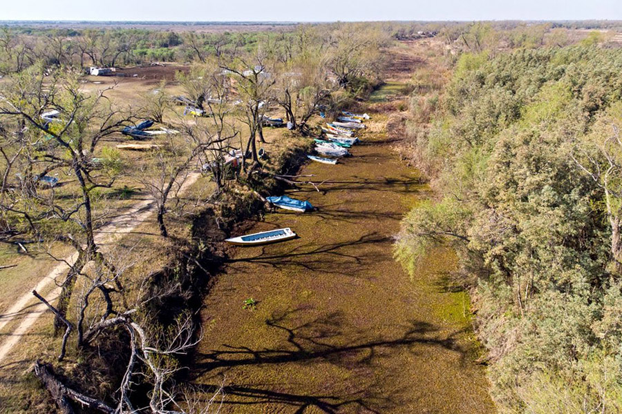
El NEA produce energia limpia de gran escala —Yacyreta y Salto Grande— pero depende de un solo corredor de 500 kV y de un rio cada vez mas variable. Diversificar la matriz y reforzar el transporte es el desafio central de la region.
EBY · Yacyreta · CTM Salto Grande · CAMMESA — Estadisticas del SADI · SECHEEP · DPEC · Secretaria de Energia (datos.gob.ar) · Mejor Energia · Pedaci, L. (2025), Guion didactico IMRSC, ILM.